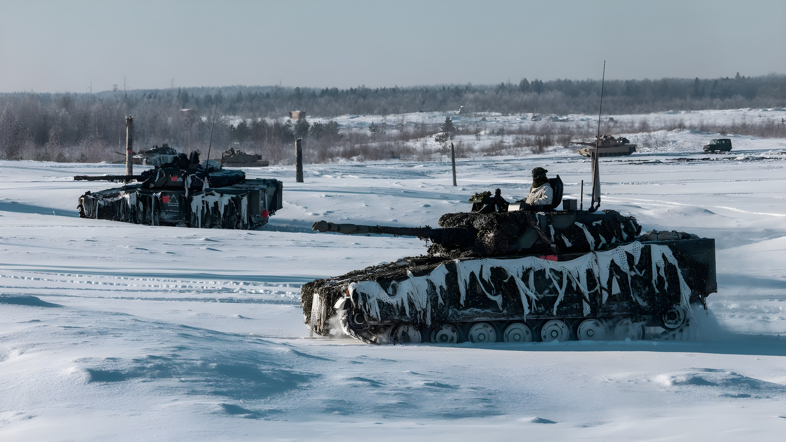

Le 11 février 2026, l'OTAN annonce le lancement d'Arctic Sentry, sa première mission militaire permanente de grande envergure dans l'Arctique. Portée par le commandement allié de Norfolk, cette opération de douze mois marque la fin d'une décennie de tergiversations et consacre la transformation de l'Arctique — longtemps zone de coopération — en nouvel espace de compétition stratégique entre grandes puissances.
Pendant des décennies, l'Arctique a fonctionné selon une logique d'exception diplomatique — les tensions mondiales s'y arrêtaient à la frontière des glaces. Ce principe, résumé dans la formule « High North, Low Tension », permettait aux huit États arctiques (Canada, Danemark, États-Unis, Finlande, Islande, Norvège, Russie, Suède) de coopérer au sein du Conseil arctique sur des questions scientifiques, environnementales et économiques, indépendamment de leurs désaccords ailleurs.
L'invasion russe de l'Ukraine en février 2022 a définitivement mis fin à cette logique. La Finlande a rejoint l'OTAN en 2023, la Suède en 2024 : l'alliance atlantique compte désormais sept des huit États arctiques, la Russie faisant face à une ceinture de membres OTAN autour de la Baltique et du Grand Nord. Moscou a suspendu sa participation au Conseil arctique, fragmentant la gouvernance régionale entre un bloc russo-asiatique et un bloc euro-américain.
Arctic Sentry est décrit par le Commandement allié des opérations comme une « activité militaire multi-domaines » destinée à renforcer la posture de l'OTAN dans l'Arctique et le Grand Nord. Sa finalité première est de donner aux planificateurs alliés une visibilité complète sur l'ensemble des activités nationales dans la région, afin de les consolider en une approche opérationnelle cohérente.
Concrètement, la mission intègre des exercices préexistants — notamment l'exercice danois Arctic Endurance et le norvégien Cold Response — et y ajoute des déploiements permanents de capacités air, mer, terre et espace. L'objectif est d'évaluer en continu les menaces perçues, principalement russes, mais aussi chinoises, dont la présence commerciale et scientifique dans l'Arctique ne cesse de croître.
Annexion illégale de la Crimée. Premières fissures dans la coopération arctique mais le cadre tient : les États-Unis et la Russie maintiennent leur dialogue au sein du Conseil arctique.
Invasion à grande échelle de l'Ukraine. L'OTAN suspend sa coopération avec Moscou dans tous les cadres arctiques. Les scientifiques occidentaux perdent l'accès à leurs homologues russes en Arctique.
Adhésion de la Finlande (avril 2023) puis de la Suède (mars 2024) à l'OTAN. L'Arctique devient une zone de confrontation directe entre Moscou et l'Alliance atlantique. La Russie pivote vers la Chine et l'Inde pour les routes commerciales arctiques.
Le commandement de JFC Norfolk est transféré des États-Unis au Royaume-Uni. Sa zone de responsabilité géographique est étendue au Danemark, à la Finlande et à la Suède, créant une zone de commandement intégrée Atlantique Nord–Arctique.
Lancement officiel d'Arctic Sentry. L'OTAN annonce la première mission militaire permanente de grande envergure dans le Grand Nord, après « une décennie d'atermoiements » selon les propres termes des analystes alliés.
Le réchauffement climatique accélère la transformation de l'Arctique en espace de compétition. La région se réchauffe environ quatre fois plus vite que le reste du globe, faisant reculer la banquise et ouvrant progressivement deux nouvelles routes maritimes aux enjeux considérables : la Route maritime du Nord (NSR), contrôlée par la Russie le long de ses côtes sibériennes, et le Passage du Nord-Ouest canadien.
Ces routes pourraient réduire de 30 à 40 % la distance entre l'Asie et l'Europe par rapport aux voies classiques (Suez ou cap de Bonne-Espérance). Elles drainent déjà des intérêts commerciaux et militaires croissants de la Chine, qui se définit depuis 2018 comme une « nation proche de l'Arctique ». Par ailleurs, le sous-sol arctique recèle environ 13 % des réserves mondiales de pétrole non découvertes et 30 % de celles de gaz naturel, ainsi que d'importantes concentrations de terres rares et minéraux critiques.
Au cœur des préoccupations stratégiques de l'OTAN se trouve le couloir GIUK (Groenland–Islande–Royaume-Uni), principal détroit permettant aux sous-marins et navires de surface russes de passer de leurs bases de la péninsule de Kola (Mourmansk) vers l'Atlantique Nord. Contrôler ce couloir, c'est contenir la marine russe en mer du Nord et garantir la liberté de navigation alliée.
C'est précisément dans cette logique que s'inscrit le renforcement des capacités britanniques en Norvège et la présence croissante d'une force de frappe navale dans les eaux nordiques. La base américaine de Pituffik au Groenland (ancienne base de Thulé) retrouve toute sa valeur dans ce dispositif, au moment où Washington réaffirme avec insistance ses ambitions territoriales sur l'île danoise.
| Acteur | Intérêt principal | Présence 2026 |
|---|---|---|
| Russie | Route NSR + ressources + accès atlantique | Flotte du Nord, bases renforcées |
| États-Unis | Groenland + couloir GIUK + défense antimissile | Base Pituffik, Cold Response |
| Chine | Routes commerciales + ressources + recherche | Brise-glaces, stations scientifiques |
| OTAN (bloc) | Endiguement russe + cohésion alliée | Arctic Sentry (depuis fév. 2026) |
Derrière la dimension militaire, c'est la question de la souveraineté et de l'accès aux ressources qui cristallise les tensions. Donald Trump a relancé dès son retour à la Maison-Blanche en janvier 2025 ses revendications sur le Groenland, territoire danois autonome, au nom de la sécurité nationale américaine et du contrôle du couloir GIUK. Cette pression a créé trois frictions intra-alliance avant même le lancement d'Arctic Sentry, illustrant les contradictions entre solidarité atlantique et compétition inter-alliés pour les ressources arctiques.
Le Svalbard, archipel norvégien au statut international particulier (traité de 1920 autorisant l'exploitation économique à tous les signataires), est lui aussi l'objet de tensions croissantes, la Russie y maintenant une présence civile et minière à Barentsburg malgré les sanctions.
« L'Arctique était un endroit qu'on appelait 'High North, Low Tension' — un lieu où les nations coopéraient. Ce modèle a changé. »
— Karen Jones, stratège, Center for Space Policy and Strategy (CSPS), janvier 2026« Depuis l'invasion de l'Ukraine, il y a un nouveau modèle en jeu — avec non seulement une géopolitique surchauffée, mais aussi une géo-économie surchauffée. »
— Brigadier général Christopher Horner, commandant, 3e Division spatiale canadienneArctic Sentry n'est pas seulement une réponse militaire à une menace russe : c'est le symptôme d'une transformation profonde de l'ordre international dans lequel la coopération sur les biens communs — environnement, routes maritimes, ressources — cède le pas à la logique de puissance. L'Arctique condensait ce que le monde avait de mieux à offrir en matière de gouvernance multilatérale ; il offre désormais le miroir de ses fractures. La question n'est plus de savoir si la compétition arctique est réelle — elle l'est —, mais de déterminer si les règles du droit international de la mer, du traité sur le Spitzberg et du droit polaire suffiront à en contenir les effets, ou si l'Arctique deviendra le premier théâtre d'une confrontation directe entre grandes puissances au XXIe siècle.